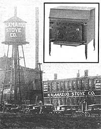

During the first half of this century, the slogan printed above was one of the best-known trademarks in the nation. It was a time when the old Kalamazoo Stove Company's line of wood and coal-fired kitchen ranges, parlor stoves, and furnaces kept winter at bay-and pots simmering-in homes all across the country. In fact, back in the 1930's the Michigan firm's 2,700 employees used more than 300,000 pounds of iron and steel per day, while more than 2,000 railroad cars distributed 100,000 stoves annually.
The company was a success from its beginning in 1902, but in the years after World War II it was so hard hit by competition from gas and electric appliances that-by the time the stove manufacturer closed its doors in 1952-there were only 100 employees on its payroll.
Now, however, thanks to the renewed popularity of wood-fueled energy alternatives, the Frey Company (a major stove and fireplace distributor, owned by Tom Frey) has joined with Environmental Energies, Inc. (which has researched and marketed wind- and solar-powered generators since 1970, and also spent five years broadening its expertise by fabricating Fisher and Timberline stoves for the Midwest) to make and sell a product that meets today's strict safety and efficiency standards at a reasonable cost. The result is the new Kalamazoo Stove Company, which offers six models ...ranging in price from $400 for a "country woodburner" to $600 for a "fireplace insert deluxe".
For those of us who toasted our toes in front of a crackling warm old Kalamazoo, the rebirth of the name is a nostalgic flash from the past ...and perhaps a sign that "those good old days" may soon become "these good new times".
EDITOR'S NOTE: For more information on this new line of woodburners, write to the Kalamazoo Stove Company, c/o E E. L, Dept. TMEN, Box 73, Front Street, Copemish, Michigan 49625.
|
 The old Kalamazoo Store Company is long gone ...but a new woodburner (inset) now bears the once-popular name. |
|
|